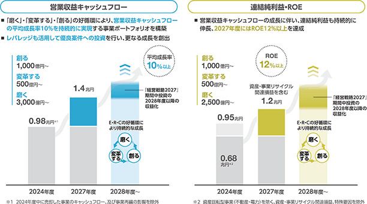
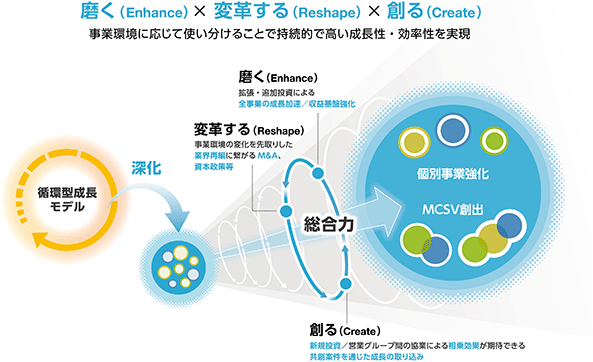
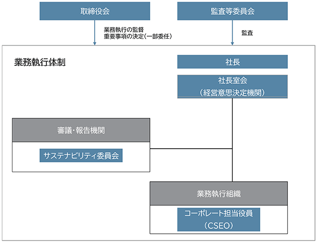
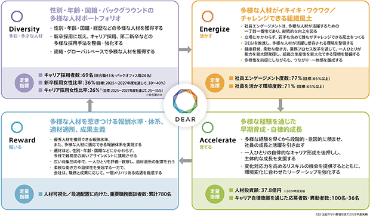
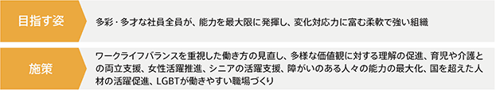
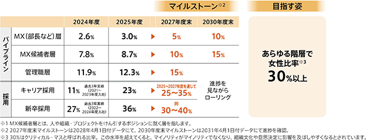
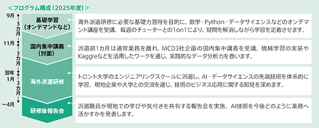
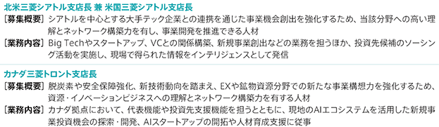
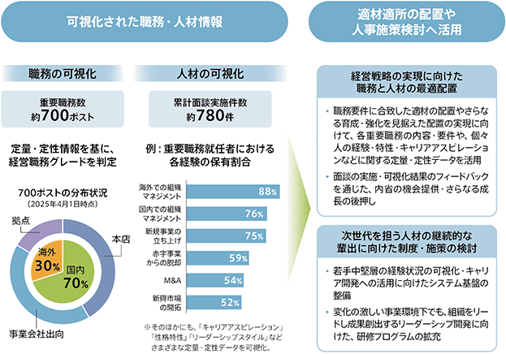
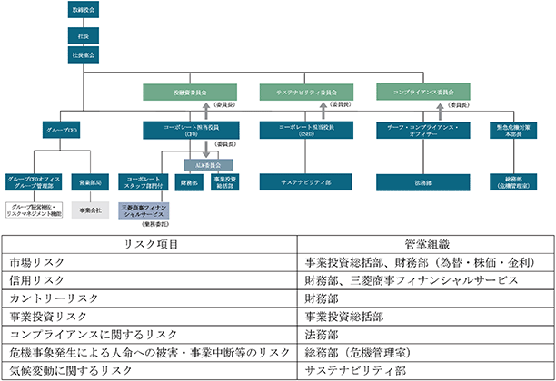

当社は、2025年4月に、新しい経営戦略として「経営戦略2027-総合力をエンジンに未来を創る-」を策定・公表しました。
当社を取り巻く事業環境は、かつてないほど地政学リスク、経済情勢リスクが複雑に絡み合う中、地域特性に応じた脱炭素の現実解を探る動き、AIの急速な発展に伴う様々な変化もあり、政治・経済・環境・技術等あらゆる面で不確実性が一段と高まっています。このような不確実性の高い事業環境において、変化によるリスクと機会を踏まえて柔軟に事業戦略を見直しつつ、既存事業の収益基盤の更なる強化と案件創出に取り組むべく、当社の中長期的な経営方針を「経営戦略2027」としてまとめました。
（1）経営戦略
■目指す姿
多様性に裏打ちされた「総合力」を事業環境に応じて発揮することで、最適な事業ポートフォリオを構築し、持続的な成長と企業価値向上を実現する企業。
総合力：多様な事業をグローバルに展開、多彩・多才な人材がオペレーションに深く関与することで、信用・信頼を築き上げ、幅広い産業知見・深いインサイトを蓄積し、時代の変化を先取りして柔軟に事業戦略を進化させる力。
■定量目標
成長性を測る新たな中核指標として「営業収益CF：平均成長率10%以上」、資本効率を意識した経営の継続・強化指標として「ROE：2027年度に12%以上」を目標に掲げ、成長性と効率性の同時実現を目指します。

■財務健全性
「Net Debt Equity Ratio：0.6倍」を上限目処に設定し、財務健全性を維持しながら、戦略的にレバレッジを活用する方針とします。
■株主還元
累進配当を維持すると共に、機動的に自己株式取得を行うとする基本方針を維持します。
（2）経営戦略2027実現のための価値創造メカニズム
従来の循環型成長モデルを「磨く（Enhance）」「変革する（Reshape）」「創る（Create）」に再定義し、当社の競争優位性である総合力と、それぞれを強化する施策の掛け合わせにより、中長期的な成長を実現します。

（3）資金配分戦略
2027年度までの3年間で計画していた更新投資約1兆円以上及び拡張・新規投資約3兆円以上については、堅調な営業収益キャッシュ・フローの推移、投資回収の加速、及び投資案件パイプライン（投資案件候補）の状況等を踏まえ、更新投資を約1.3兆円以上、拡張・新規投資を約3.3兆円以上へと引き上げました。また、今後もキャッシュ・フローの状況により追加配分枠が生じた場合は、投資案件パイプライン等を踏まえ、投資又は追加還元への配分を検討します。
当連結会計年度は成長性と効率性の同時実現に向け、「磨く」・「変革する」・「創る」の各取組みが着実に進捗しました。当社を取り巻く事業環境の不確実性は「経営戦略2027」の策定・公表時から更に高まっていますが、翌連結会計年度においても投資規律を保ちながら新規投資案件の実行、及び収益基盤強化に取り組み、価値創造メカニズムを加速して参ります。
3. 当連結会計年度のセグメント別の事業環境
主要商材であるLNGの世界需要は微増し、2025年の需要は約4.2億トンとなりました。なお、アジアのLNGスポット価格（JKM）は、2026年2月までは、百万Btu（英国熱量単位）当たり9米ドル台から14米ドル台のレンジで推移しましたが、中東情勢の影響を受けた2026年3月には20米ドル超まで上昇しました。原油取引の国際的な基準価格の一つであるブレント原油価格は、世界的な供給余剰と需要減速を背景に年度初めから2026年2月まで1バレル当たり60米ドル半ばを推移する緩やかな下落基調でしたが、JKM同様に中東情勢の影響を受け、2026年3月には110米ドル超まで高騰しました（年間平均1バレル当たり約70米ドル）。
世界経済の不透明感が継続する中、各種素材の主要市場である中国の内需低迷を背景とした過剰輸出の継続により、各種素材の市況は軟化基調で推移しました。鉄鋼分野では、中国経済の減速や中国からの鋼材輸出増等を背景に需給が緩和する中、国内では建設分野を中心に需要の回復が限定的となり、事業環境は弱含みで推移しました。化学品分野でも市況低迷が長期化する中、地域情勢の変化等による不確実性も事業環境に影響を与えました。
主力事業の一つである原料炭については、上期は中国の国内鋼材需要低迷に伴い、中国鋼材の旺盛な輸出が前年度から継続し、鋼材及び原料炭市況の低迷に繋がりました。一方で、下期以降はインドの高炉稼働率上昇に牽引された需要増に加え、一部炭鉱での生産障害や豪州における大雨の影響に伴う供給制約により、原料炭市況は回復基調に転じました。もう一つの主力事業である銅については、2025年4月以降において米国関税政策の影響、及び大型鉱山の相次ぐ生産障害による供給懸念や米国利下げ観測等を背景として市況は堅調に推移し2026年1月末に史上最高値を更新、その後は中東情勢・米国金融政策等のマクロ要因を中心にボラタイルな値動きが継続する展開となりました。
米国不動産事業では、米国利下げの進展を背景に市場流動性は回復基調にあり、不動産取引量は回復に転じました。また、データセンター分野でも国内、米国共にクラウドの普及や生成AI需要に伴い、市場拡大しました。産業機械分野では、底堅い設備投資需要や円安の影響等を受けて、事業環境は堅調に推移しました。
世界的な金利の高止まり、特にアセアンにおける実体経済の軟化や厳格なファイナンス（自動車ローン）審査の継続等により自動車市場は低迷し、競合各社が購買力のある顧客を巡り値引き競争が激化する等、厳しい事業環境にありました。その中で、アセアンをはじめとする既存の自動車バリューチェーン事業ではAI・DX活用による顧客体験の質向上・ブランドロイヤリティ強化等を推進し、インド・日本・豪州ではモビリティサービス事業の構築を推進しました。
穀物事業では、世界的に豊作が続いたことで相場は概ね安定的に推移しました。水産事業では、例年に比べ海水温が高く養殖サーモンの成長が良好であったため、業界全体で大幅な増産となり相場は低位に推移しました。一方で中長期的な需要増加基調は維持されており、CermaqによるGrieg Seafood ASA傘下のサーモン養殖3事業の取得を通じ、生産規模拡大と安定供給体制の強化を進めました。畜産事業では、堅調な鶏肉需要を背景に国内相場は高水準が続きました。
国内小売・流通事業に関しては、原材料価格の高騰、インフレ、賃金上昇等のコスト圧力に対する影響等はあったものの、消費者ニーズを踏まえたマーケティング施策による売上拡大や、AI仕入施策による品揃えの最適化、オペレーション最適化により事業は堅調に推移しました。また、金融事業に関しては、金利・為替のボラティリティの影響は限定的に止まり、事業は堅調に推移しました。
主力事業の一つである再生可能エネルギー事業については、米国においてインフレ抑制法に基づく税額控除要件が減税・歳出法の成立により一部変更されたほか、欧州委員会によるクリーン産業ディール国家補助枠組みの採択、複数国における政策支援の導入・実施等、事業環境の地域によるばらつきの拡大が見られるものの、競争力のある電源として世界での導入は着実に進行しています。他方で、データセンター／AI需要や電化進展による電力需要の増加、エネルギー価格の高騰、及び地政学リスクの高まり等を背景に、エネルギー安全保障や産業競争力維持・強化への対応が重要課題となる中、安定的な電力供給が可能で環境負荷が相対的に低いガス火力発電の有用性が世界的に再認識されました。
4. 翌連結会計年度以降のセグメント別の事業環境の見通し
エネルギー事業に関わる商材・機能を一元化し、地域ごとに柔軟なバリューチェーンを構築することで、エネルギートランジション期の多様なニーズに応え、最適なソリューションを提供することを目的に、地球環境エネルギーグループと電力ソリューショングループを統合し「エネルギー＆パワーソリューショングループ」を設立しました。これに伴い、当連結会計年度までの8グループ体制を、翌連結会計年度から7グループ体制へと改編します。
① エネルギー＆パワーソリューショングループ
脱炭素社会への移行は不可逆的な潮流である一方、世界的なエネルギー需要の増加見通しや地政学リスクの高まり等を背景として、エネルギー安全保障及び産業競争力の強化に向けた対応が各国で加速する事が想定されます。このような事業環境の下、天然ガス／LNGについては、引き続きアジア地域を中心に中長期的な需要増加が見込まれています。次世代エネルギー分野においては、上記の事業環境に加え、インフレ進行に伴うコスト上昇の影響も受け、商材並びに地域毎の事業進展のばらつきが一層顕在化しています。具体的には、コスト競争力の観点からバイオ燃料・クレジット事業が欧米を中心に先行する一方で、水素及び水素派生品については、社会実装の進展速度が相対的に鈍化しています。また、電力需要の増加や地政学リスクへの対応を背景として、既に再生可能エネルギーが競争力を持つ地域を中心に再生可能エネルギー、産油・ガス国では火力発電等、地域特性及び競争力に応じた電源の導入が進展すると想定されます。加えて、このような事業環境の下、送電容量の不足や局地的な電力需給の逼迫が社会課題となり、ガス火力発電や蓄電池等を活用した需給調整機能の重要性が更に高まる事が見込まれます。
中東を中心として不透明な世界情勢に加え、AI進展による素材開発の高速化等を背景に、素材産業を取り巻く事業環境は今後も変化を続けていくことが想定されます。人口増加を支える住宅・インフラ素材に加え、軽量化・電化を支える素材、デジタル社会の発展を支える素材等への需要は、今後も底堅く推移する見通しです。地域や用途によっては需要動向にばらつきが見られるものの、素材分野全体としては安定した需要環境が見込まれます。
原料炭においては、インド等の新興国による需要の牽引、中国鋼材需要並びに同国鋼材輸出量の推移、天候等に起因する原料炭生産者の供給制約等、海上貿易市場へ影響を与え得る事象を注視しています。銅においては、引き続き堅調な需要と供給側の制約によりタイトな需給環境となる見込みです。中長期的には、新興国を中心とする世界経済の成長や、脱炭素・電化を背景とした再エネ・EVの普及等により、金属資源の需要は底堅く推移することが見込まれます。
米国不動産事業については、インフレ・金利動向に影響を受ける状況に変化はなく、不動産取引量を注視しています。データセンターについては、クラウドの普及や生成AI需要拡大に伴い日米共に引き続き市場拡大が見込まれています。また、社会インフラの維持・発展を支える産業機械分野は、底堅い需要増加が見込まれます。
主力地域であるアセアンの自動車市場は、厳格なファイナンス審査や競合各社との激しい競争が暫く継続する見通しであり、また、世界情勢の不安定な状況が継続し、実体経済等への影響が生じる可能性もあり、不透明な事業環境が続くと予想されます。一方、同地域での自動車市場は、潜在的な需要や自動車普及率に鑑みると、中長期的には回復・更なる拡大に転じると想定されます。また、グローバル全体での電動化・自動運転化は、普及速度に変化はあっても不可逆的に進展する見込みであり、周辺市場の成長と新たな事業機会が見込まれます。
地政学リスクの高まりや、これに起因する通商・経済安全保障政策の変化などにより、不確実性の高い事業環境が継続すると見込まれます。一方、世界的な人口増加やバイオ燃料需要の拡大を背景に基礎食料の需要は底堅く推移するとともに、消費者のWell-being志向の高まりや嗜好の多様化に伴い、食の質的向上へのニーズも引き続き拡大していくものと見込まれます。
中長期的には国内の人口減少・高齢化に伴う消費市場縮小の流れ、短期的には原材料価格の高止まりや金利上昇の影響、加えて、中東情勢による調達への影響や電気代の上昇等も想定されますが、当面は安定した消費動向が続くことにより、対面市場は底堅く推移していく見通しです。また、海外でも、米国や東南アジア等を中心に、人口増加や経済成長に伴う対面市場の伸長や新たな事業機会が見込まれます。
当連結会計年度における重要な個別案件については、「3 事業等のリスク 2.主要なリスクの概要 ⑤事業投資リスク」内の（重要な投資案件）をご参照ください。
当社の企業理念である「三綱領」には、事業を通じ、物心共に豊かな社会の実現に努力し、かけがえのない地球環境の維持にも貢献することがうたわれています。近年、様々な社会課題解決に対する企業への期待・要請が一層高まっている中、当社は、事業活動を通じて解決していく重要な社会課題である「マテリアリティ」を指針とし、共創価値を創出し続けることで、社会と共に成長を続けることを目指しています。マテリアリティの詳細については当社ウェブサイト
https://www.mitsubishicorp.com/jp/ja/sustainability/materiality/
（1）サステナビリティ推進体制
サステナビリティ関連のリスク及び機会に係る戦略の策定及びリスク管理は、コーポレート担当役員（CSEO）が管掌し、サステナビリティ部が方針施策を企画・立案のうえ、サステナビリティ委員会で討議後、社長室会、取締役会に付議・報告される体制となっています。社長室会を経営意思決定機関とする業務執行体制は、全社のコーポレート・ガバナンス体制のもと、取締役会、監査等委員会により監督・監査されています。業務執行体制におけるサステナビリティ関連のリスク及び機会の評価並びに管理については、「2.リスク管理」に記載しています。当社のコーポレート・ガバナンスの基本方針及び全社のコーポレート・ガバナンス体制の概要については、第4 提出会社の状況 4 コーポレート・ガバナンスの状況等「(1)コーポレート・ガバナンスの概要」に記載していますが、サステナビリティ推進に係る部分のみを抜粋すると下図のとおりとなります。

（2）ガバナンスの状況
取締役会は経営上のサステナビリティ関連のリスク及び機会を含む重要事項の決定と、業務執行の監督について責任を負う機関です。取締役会の構成、構成する各個人のスキル、及び監督責任を果たすために適切な取締役を選任するプロセスについては
なお、サステナビリティ関連のリスク及び機会に関しては、サステナビリティ関連施策の基本方針（サステナビリティ関連施策活動方針、サステナビリティ開示方針等）が報告事項となっているほか、取締役会又は社長が必要と認める事項が付議・報告されます。また、取締役会に付議される投融資案件が重要なサステナビリティ関連のリスク及び機会を含む場合は、経済的側面だけでなく、環境・社会面も含めて審議がなされています。
監査等委員会は、会社法等諸法令や定款・諸規程等に基づき、サステナビリティに関する取組も含めて、取締役の意思決定の過程や職務執行状況の監査を実施しています。なお、当連結会計年度においては監査等委員会の監査計画の重点監査項目の一つとして中期経営戦略の実行状況を設定しており、サステナビリティ施策も含めた主要項目の実行状況を確認しました。監査等委員会の構成、当連結会計年度における監査等委員会の活動状況は
社長室会はサステナビリティを含む経営方針、経営目標、全社経営計画等に関する執行側の最高経営意思決定機関です。社長、並びに社長が指名する執行役員及び職員等が委員を構成しています。サステナビリティ委員会で討議されたサステナビリティ関連のリスク及び機会に係る全社方針が付議・報告されるほか、投融資案件のうち重要性が高い案件についても付議・報告がなされており、経済的側面だけでなく、環境・社会面からも審議がなされています。
サステナビリティ委員会は、サステナビリティの基本方針や取組について討議する社長室会の下部委員会です。コーポレート担当役員（CSEO）を委員長とし、他のコーポレート担当役員、全営業グループCEO及び経営企画部長が委員を構成しています。討議においては、地球環境（気候変動・生物多様性等）、地域・社会（先住民・文化遺産等）、人権・労働（児童労働・強制労働・労働安全衛生等）といった観点を踏まえ、具体的には以下のテーマを中心に取り扱っています。
・気候変動対応
・マテリアリティ
・生物多様性
・人権／サプライチェーン・マネジメント
・環境保全
以上の各機関・会議体の開催頻度、及びサステナビリティを取り上げる頻度は以下のとおりです。
2.リスク管理
（1）サステナビリティ関連のリスク及び機会を識別、評価及び管理するプロセス
当社では営業グループと各リスクに対応したコーポレート専門部局が連携し、適切なリスク対応が可能な管理体制を整備しており、サステナビリティ関連のリスク及び機会についてはコーポレート担当役員（CSEO）のもとサステナビリティ部が管掌しています。当社のリスクマネジメント体制については、
全社のリスク管理方針や取組方針・戦略については、サステナビリティ推進体制のもと、サステナビリティ委員会にて討議され、社長室会及び必要に応じて取締役会への付議・報告を経て、全社施策として実行・運営されます。
また、当社では、取締役会や社長室会に付議される全ての投融資案件は、社長室会の諮問に基づき投融資委員会で審議され、社長室会へ意見具申されます。この投融資委員会には各リスクの管掌部局が参加しており、サステナビリティに関連するリスクについても、サステナビリティ部長がメンバーとして参加することで、環境や社会に与える影響も踏まえた総合的な意思決定を行う審議体制を整備しています。新規案件においては事業戦略との整合性やリスクの所在と対応策等を審議し、既存案件についても年に1度、経営計画書に基づき事業投資先の経営状況や事業のライフサイクルなどをモニタリングすることで、継続的な改善・バリューアップを図っています。さらに、気候変動関連のリスク・機会が大きい一部の新規投資案件に対しては、脱炭素シナリオ下の主要前提を用いた採算指標（社内炭素価格等）に基づく採算評価を参考値として併記し、案件審議に活用しています。
（2）気候変動関連のリスク、機会の管理及びモニタリング
当社は上記のプロセスに基づき、気候変動関連のリスク及び機会を重大なサステナビリティ関連のリスク及び機会として識別しています。これは、異常気象の頻発による水資源への影響や、人口動態・自然界の生物多様性に与える影響、これに伴う食糧資源や自然資源への影響等、気候変動がもたらす影響は、地球環境や人類、企業活動にとって重大であるとともに、当社事業の継続性、並びに当社の経営成績に重要な影響を及ぼす可能性があるためです。
気候変動に関連して生じるリスクは、カーボンプライシング（炭素税等）や各種規制強化による操業・設備コストの増加、既存技術に依拠する製品・サービスの陳腐化等の移行リスク（政策・法規制リスク、技術リスク、市場リスク等）と、渇水・洪水等による事業の操業への影響等の物理的リスクに大別されます。
当社は、気候変動は重大なリスクであると同時に、イノベーションや新規事業の実現を通じ新たな事業機会をもたらすものと考えており、「脱炭素社会への貢献」をマテリアリティの一つに掲げ、持続可能な成長を目指す上で対処・挑戦すべき重要な経営課題の一つとしています。
これらのリスク及び機会を管理、モニタリングし、ポートフォリオの脱炭素化・強靭化を進めるためのメカニズムの基礎として、“MC Climate Taxonomy”を導入しています。“MC Climate Taxonomy”では、当社の全ビジネスユニットを対象に、気候変動の移行機会が大きいものをグリーン事業、移行リスクが大きいものをトランスフォーム事業、どちらにも該当しないものをホワイト事業と3つに分類しています。この事業分類を踏まえて、グリーン事業・トランスフォーム事業に対して、シナリオ分析の実施、投融資案件審査時の脱炭素採算評価の実施、投資計画策定時のGHG削減計画の確認を行い、当社事業が個別案件及び全社事業戦略の両面において気候変動のリスク及び機会を管理する適切なリスク管理制度を設けています。なお、分類については最低でも年度に一度見直しを行っています。
その他のサステナビリティ関連のリスク及び機会に関しては、当社ウェブサイト
https://www.mitsubishicorp.com/jp/ja/sustainability/
（1）ポートフォリオの脱炭素化と強靭化への取組
「2.リスク管理」で記載したとおり、当社は、気候変動関連のリスク及び機会を当社の事業戦略に重要な影響を与えるサステナビリティ関連のリスク及び機会として特定しています。その上で、“MC Climate Taxonomy”による分類に基づきモニタリング対象として特定した一部のグリーン及びトランスフォーム事業に対して、シナリオ分析を実施し、これらのリスク及び機会がビジネスモデルとバリューチェーンに与える影響を評価しています。この評価結果を事業戦略へ落とし込むべく、投融資残高やGHG排出量の大きいトランスフォーム事業については、トランスフォーム・ディスカッション（※）にて、気候変動観点で事業推進において重要と考えられる指標を経営レベルでモニタリングしています。
以上のような、気候変動に係るリスク管理及び戦略への織り込みに加え、対外開示までを一つのサイクルとして捉えて、効果的な運用を行っています。
※トランスフォームに分類された事業を対象に、移行リスクとして注視すべき需給の動向や技術革新の動向を特定し、事業への影響を経営レベルでモニタリングするもの。
（2）気候変動関連のリスク及び機会に係るシナリオ分析
当社は、気候変動に関するリスク低減及び機会取り込みに向けた取組の一環として、外部機関が公表する気候シナリオを用いたシナリオ分析を継続的に実施しています。当該分析を通じて、気候変動に伴う中長期の移行リスク及び機会、並びに物理的リスクを適切に把握し、それらを考慮した事業戦略の策定や投資判断等を行う体制を整えています。
当社は、当連結会計年度にシナリオ分析を実施しており、移行リスク及び機会に関する分析とその結果は以下のとおりです。なお、当該分析については、今後も当社事業や参照するシナリオに重要な変更があった場合、又は経営サイクルごとに適宜更新する方針としています。
本分析では、国際的に最も広く参照され、各国政府、企業、金融機関など多様なステークホルダーの基準として用いられている国際エネルギー機関（IEA）の「World Energy Outlook（WEO）」を主たる外部気候シナリオとして参照しています。WEOは、エネルギー需給、エネルギー価格や炭素価格、並びに国・地域別及びセクター別のエネルギー起源CO2排出量等に関する定量的データを包括的に提供しており、複数分野にわたる当社の事業ポートフォリオを横断的に評価する上で分野間の整合性及び客観性の高い分析基盤を提供するものと判断しています。
具体的なシナリオとしては、IEA WEO2025におけるSTEPS（Stated Policies Scenario）及びNZE（Net Zero Emissions by 2050 Scenario）の2つのシナリオを採用しています。STEPSは、各国の現行政策及び既に公表されている政策方針や目標を全て反映した脱炭素進展シナリオ（フォアキャスト型）であり、現時点の政策動向を前提とした、より現実的な将来のリスク及び機会を評価する上で適しています。一方、NZEは、1.5℃目標の達成に向けて世界全体で極めて野心的かつ迅速な脱炭素化が進展することを前提としたシナリオ（バックキャスト型）であり、実現には高いハードルがあるものの、脱炭素社会への移行が最も進展した場合におけるリスク及び機会を評価する上で適しています。
当社は、これら二つの異なる前提をもつシナリオを活用することで、政策進展の度合いや社会の脱炭素化速度に応じた多様な将来像を想定し、対象事業を定量・定性の両面から分析しています。なお、各シナリオにおける気候関連の政策やマクロ経済トレンド等については、WEO2025をご参照ください。
グローバルに拠点を有し事業を展開する当社では、気候変動がもたらし得るリスク及び機会の影響が特に大きいと考えられる事業を優先的に抽出し、シナリオ分析の対象としています。
具体的には、EU Taxonomy等の考え方も踏まえた当社独自の事業分類である“MC Climate Taxonomy”に基づきトランスフォーム事業に分類された事業のうち、投融資残高、純利益、資産額等が大きく当社への財務影響が相対的に大きい「天然ガス／LNG」「原料炭」を移行リスクの分析対象として選定しました。
移行機会については、“MC Climate Taxonomy”に基づきグリーン事業に分類されたもののうち、投融資残高、純利益、資産額等が大きく当社の財務への影響が相対的に大きい「銅」「再生可能エネルギー」を分析対象として選定しました。
当社が実施するシナリオ分析は、将来の事業環境の変化を多角的に検討し、気候変動が当社の事業に与え得るリスク及び機会を把握することを目的としたものであり、特定の将来予測や当社の業績見通しを示すものではありません。各シナリオには多くの不確実な要素・仮定を含んでいるため、GHG排出量削減に係る道筋を含め実際に実現する事象は各シナリオが示す内容とは大きく異なる可能性があります。本分析の結果は将来の財務的影響を正確に予測するものではなく、あくまでリスク及び機会の方向性を把握するための参考情報として位置づけています。
シナリオ分析の結果、移行リスク及び機会について当社の事業及び資産に一定程度影響が想定されることが確認されました。一方で、当該リスク及び機会は、特定のシナリオ下における参考情報であり、現時点では当社の財務状況や事業継続に重大な影響を及ぼすものではないと認識しています。
詳細な分析結果は、
https://www.mitsubishicorp.com/jp/ja/sustainability/environmental/climate-change/003.html
（1）目標
当社は、2026年5月1日付公表「カーボンニュートラル社会へのロードマップ2.0」のとおり、変化を続ける事業環境に対して柔軟かつ能動的に対応することで、引き続き「持続可能で安定的な社会と暮らしの実現」と「低・脱炭素社会に向けた貢献」が両立された「責任あるエネルギー・トランスフォーメーション」を実践し、当社の中長期的な成長・企業価値向上に繋げていきます。世界の平均気温上昇を今世紀末までに産業革命以前に比べて2℃より十分低く保ち、1.5℃に抑えることを目指すパリ協定の目標を踏まえた温室効果ガス（GHG）排出量の削減目標を設定し、同目標の達成に向けて諸施策を推進しています。ポートフォリオの脱炭素化と最適化の両立を図り、MCSV（共創価値）の創出を推進していきます。そのために、脱炭素社会の実現に向けた以下2つの目標を掲げています。
① GHG排出量の削減目標
多様な産業に携わる企業の責務として、当社の事業活動におけるGHGの排出削減を着実に実行していきます。GHG排出量は、2030年度に向けて、事業ポートフォリオの入替や再生可能エネルギー調達を主軸に、2020年度比「30%減～半減」を目指します。自社の排出削減と社会への貢献を一体とした経営戦略を推進し、2050年ネットゼロに向けた確かな進捗を促進して参ります。
同削減目標においては、GHGプロトコルの財務支配力基準に基づき、Scope1・2、Scope3カテゴリー15に加え、Scope3カテゴリー13の一部である貸手ファイナンスリースの発電資産から生じる排出を削減対象に含めています。当社は従来、当該発電資産からの排出も、削減対象であるScope1・2及びScope3カテゴリー15に含めて目標及び実績を開示しておりましたが、現在実施している翌連結会計年度からのSSBJ基準適用に向けたGHGプロトコルに基づく算定精緻化に伴い、当該排出量はScope3カテゴリー13への区分変更が必要となると見込んでいます。ただし、当社としては当該排出量について発電事業における非化石比率を目標（下記②）に掲げていることなども踏まえ、変更後区分であるScope3カテゴリー13についても変わらず目標に含め排出量削減に努めていきます。
なお、SSBJ基準適用準備は現在も継続しており、その他排出においても区分変更が必要となる可能性があることから、当連結会計年度の実績は区分変更を反映せず、SSBJ基準適用時に区分変更を反映した実績を開示する方針です。その為、下記「（2）GHG排出量（Scope1・2、Scope3カテゴリー15）の実績」では、削減目標の対象である発電資産からの排出を引き続きScope1・2及びScope3カテゴリー15に含めています。
② 発電事業における非化石比率
ポートフォリオの入れ替えや、燃料転換、新技術等の活用を通じて、2050年までに当社発電事業における非化石比率100%化を目指します。なお、石炭火力発電事業については、ベトナム／ブンアン2案件を最後として今後新規事業は手掛けず、段階的に撤退することで、2030年度までに2020年度比で持分容量を3分の1程度まで削減し、2050年までに完全撤退する方針です。
（2）GHG排出量（Scope1・2、Scope3カテゴリー15）の実績
当連結会計年度のGHG排出量（Scope1・2、Scope3カテゴリー15）実績値は以下のとおりです。
当連結会計年度におけるセグメント別の排出量（Scope1・2、Scope3カテゴリー15の合計）の実績は以下のとおりです。
上記の数値は、当社及び第5 経理の状況の連結財務諸表における連結子会社、共同支配事業をScope1・2の対象とし、関連会社、共同支配企業をScope3カテゴリー15の対象と判断して集計しており、報告日についても第5 経理の状況 連結財務諸表注記3「(1)連結の基礎⑥報告日」と同様の方針としています。なお、実務上の負荷等を勘案し、一部の会社について収集を省略するなど、連結財務諸表の報告範囲との差異が生じていますが、当該差異が上記の数値に与える影響には重要性がないと判断しています。財務支配力基準でのScope3カテゴリー15のGHG排出量算出にあたっては、連結財務諸表で用いる持分比率を適用しています。
Scope1・2とScope3カテゴリー15の区分にあたって、GHGプロトコル等の基準を参照していますが、一部当社としての判断を行使している場合もあります。例えばリース契約においては契約形態に応じた会計上の取扱いを参照し区分することが可能ですが、業界慣習や排出量の情報取得の難易度等も勘案し、事業ごとに異なる整理をしている場合があります。SSBJ基準適用に向けて、集計に係る基準を明確化する等により当該整理に変更が必要な場合、かつ当該変更に関連する排出量に重要性がある場合は、当連結会計年度以前の数値についても遡及的に修正する可能性があります。
なお、Scope3排出実績については、当社ウェブサイト
https://www.mitsubishicorp.com/jp/ja/sustainability/esg-data/files/ja_esg_index_2025.xlsx
（1）人的資本に関するガバナンス
人的資本に関連する戦略・リスクについては、コーポレート担当役員（人事）のもと人事部が管掌しています。人事制度、人事施策、人材開発、人員政策に関する重要事項及び経営幹部人材の育成活用に関する事項については、HRD委員会（委員長：コーポレート担当役員（人事））にて討議され、所定の基準に基づき社長室会及び取締役会への付議・報告を経て、全社施策として実行・運営されます。
（2）人的資本に関する戦略 -10年後を見据えたMC HR Vision「DEAR」-
当社はこれまでも時代のニーズに合わせて自らのビジネスモデルを変革させ、新たな価値を追求して参りました。人材はその価値創出の源泉であり、当社にとって最大の資産と認識しています。
変化の激しい事業環境下においても、そうした新たな価値を創出し続ける会社・組織であるため、最も重要な経営資源である「人材」に関する10年後を見据えたMC HR Vision DEAR（多彩・多才な人材を活かし、育て、報いる）を定めました。「多彩・多才な人材がつながりながらやりがいと誇りをもって、社会や産業の課題解決に挑む会社」を目指すことを指針とし、「人」こそ最も大切にしたいという想いを込めて、“親愛なる”を意味する英単語である「DEAR」と表現し、4つのアルファベットそれぞれにて以下のようなコンセプトを示しています。
※経営戦略2027期間における人事関連の取り組み方針は、第4 提出会社の状況 5 従業員の状況等をご参照下さい。

上記、MC HR Visionにて掲げた方針に基づき、DEARの4つの区分夫々において、各種施策を推進して参りました。
具体的な施策例の一部については、以下のとおりです。
a.「D：“Diversity ／多彩・多才な人材”」
♢ 採用手法の多様化・高度化
多様なバックグラウンドを持つ人材を迎え入れるため、採用手法の多様化・高度化を進めています。人材を最大の資産と位置付け、国内外の学生やプロフェッショナルを広く対象とする選考を継続しています。さらに、第二新卒採用や一般職採用の拡充に加え、学業や学生生活との両立に配慮した新卒採用の複線化を進めるなど、多様な人材が参画しやすい仕組みづくりを推進しています。また、一般職についても、2023年度よりキャリア採用を実施、2027年度入社からは8年ぶりに新卒採用を再開しました。
市場環境の変化に応じて、バックオフィス業務もより非定型化・高度化が進む中で、変化への対応力を高めていきます。
♢ グローバルタレントマネジメント：
これまでも、三菱商事は各種グローバルベースのタレントマネジメントに取り組んできましたが、昨今の日本国内における労働人口減少トレンドや多様な視点の取り込みを通じた持続的な価値創造に向け、あらためて会社の形・タレントマネジメントの在り方を検討しています。現在は、グローバルベースの三菱商事在外拠点のニーズに基づいた各地域のタレントマネジメント施策を本店側から支援しつつ、海外連結先事業会社も含めた人事関連のナレッジシェアリング／ネットワーキング機会の提供を実施しています。
・「アジア大洋州におけるコアタレントの可視化」：
具体的には、地域拠点における優秀人材の可視化に向けたアセスメントの実施、及びサクセッショ
ンプランニングの策定を実施。アセスメントにおいては、Human Link Asia※による、インタビュー
ベースの手法を用い、三菱商事単体の重要職務就任者面談で得た知見なども活用しています。
（※人事機能子会社 ヒューマンリンクの海外拠点）
・「グローバルモビリティガイドライン整備」:
国をまたいだアサインメントやタレントマネジメントのニーズ増加を踏まえ、
米州・アジア大洋州・欧阿中東の3地域横断のタスクフォースを組成し、三国間の転勤
ガイドラインの整備に着手しています。
・「ネットワーキング／ナレッジ共有イベントの開催」:
ナレッジ共有及びネットワーキングの強化を目的として、各地域拠点及びグローバルベース
の連結先事業会社の人事パーソンが集う「Global HR Conference」を本店人事部主催で実施
しています。
b.「E：“Energize ／活かす”」
♢ ダイバーシティ、エクイティ＆インクルージョン（DE&I)推進：
DE&I推進については、2023年度に社長直下のDE&Iワーキンググループを設置し、目指す姿を策定しました。2024年度・2025年度は、「DE&Iアンバサダー組織」を各部門・グループに設置し、集中的な理解促進・実践、さらにはその横展開を通じたDE&I推進のけん引を図りました。多岐にわたる取り組みが実践された結果、DE&Iアンバサダー組織のみならず全社でDE&Iの浸透度が高まっています。

♢ 女性活躍推進に向けたマイルストーン・施策 ：
女性活躍はDE&I推進の重要なドライバーと位置付けています。目指す姿とマイルストーンに向けて設定した4本柱「採用強化」「育成・登用におけるジェンダーギャップの解消」「女性エンパワメント」「働きやすい環境整備」を軸に、各種施策を実行しています。
こうした取り組みにドライブをかける目的で、2024年度に採用・パイプラインにおけるマイルストーンを設定しました。この実現に向けて、「女性の母集団拡大を目指した採用活動の強化」、「ジェンダーギャップの解消を目指した成長機会の提供」、「女性エンパワメントを目的とした視野拡大・意欲向上を目指したネットワーキングの提供」、「女性が抱える課題に基づく就業サポート」などを、スピード感をもって実行し各種施策を設定していくことで、あらゆる階層でクリティカルマスとされる女性比率30%以上の早期実現を目指します。

※女性活躍推進に係る指標については
c.「A：“Accelerate ／育てる”」
♢ AI人材育成プログラム：
AIと事業の両面に精通する人材育成に向け、各種研修プログラムの拡充を実施しています。具体的には、カナダのトロント大学と連携したプログラムを導入し、参加者は基礎学習、国内集中講義、海外派遣を組み合わせたカリキュラムを履修し、修了後は各組織でAI・デジタル関連業務に取り組み、学習内容を事業へ還元します。

♢ 公募型異動配置施策の推進：
社員が自らの想いを持ってキャリアを考え、適材適所で自身の力を最大限発揮できるよう、公募型異動制度「Career Choice」、社内複業制度「Dual Career」などを通じ、機会の拡充を推進してきました。2024年度には、新たに米国・シアトルとカナダ・トロントの2つの全社拠点長ポストを「Career Choice」によって公募しました。2025年度は新たにボストン、ブリュッセル、ストックホルム、バンガロールでの全社拠点長公募を実施しています。

d.「R：“Reward ／報いる”」
♢ 重要職務就任者面談：
当社ならではの様々な経験を経て、連結ベースで重要な役割を担う人材「重要職務就任者」約700名を対象に、面談を通じた可視化を2021年度より継続実施しており、面談実施件数は累計約780名となりました。面談データは全社ベースでの最適配置に向けた参考材料として活用するとともに、可視化したデータをマクロ的に捉え、次世代を担う人材の育成に向けた各種施策の検討に繋げています。

（3）指標及び目標
「人的資本の価値最大化」に向けた施策の進捗状況に関する主な指標及び目標は以下のとおりです。
当社では、営業グループと各リスクに対応したコーポレート専門部局が連携し、適切なリスク対応が可能な管理体制を整備しています。なお、以下については当連結会計年度末以降提出日までの管理体制に係る変更等を反映しています。

① 世界マクロ経済環境の変化によるリスク
世界的な、又は地域的なマクロ経済環境の変化は、個人消費や設備投資と深く関係し、商品市況にも影響を及ぼします。その結果、当社がグローバルかつ多様な産業領域に展開している事業の商品・製品価格、取扱量やコストなどに変動をもたらし、経営成績及び財政状態に大きな影響を及ぼす可能性があります。
当連結会計年度においては、関税をはじめとする米国の通商政策の影響もあり、世界経済は減速しつつも総じて底堅い成長を維持しました。当面は緩やかな成長を維持すると見られますが、米中対立、ロシア・ウクライナ情勢、中東情勢等地政学リスクに加え、米国の通商政策・金融政策の動向、中国景気の弱含み等、不確実性が非常に高く、動向を注視しています。
以下「当期純利益」は、「当社の所有者に帰属する当期純利益」を指しています。当期純利益への影響額は、他に記載のない限り、当社の当連結会計年度の連結業績を踏まえて試算した、翌連結会計年度に対する影響額を記載しています。
当社は、商品の売買取引や、保有する資源エネルギーの権益における生産物の販売、そして関係会社の製造する工業製品の販売などの活動を通じて、様々な商品価格の変動リスクを負っています。特にエネルギー資源及び金属資源の取引においては、売買価格の変動を通じて当社の業績に大きな影響を及ぼします。
また、投資の評価においても商品価格が重要なインプットとなる場合があります。特に事業期間が長期に及ぶ場合、短期的な価格の動向よりも中長期的な価格見通しの方が、投資の評価により重要な影響を与えるため、将来の需給環境等のファンダメンタルズや、社外の金融機関等の提供するデータ等を考慮して、商品ごとに当社としての見通しを策定しています。商品市況の長期的な低迷又は上昇が想定される場合には、保有する有形固定資産や持分法で会計処理される投資などの減損及び減損戻入を通じて、業績に影響を与える可能性があります。
当社の重要な投資案件については、「⑤ 事業投資リスク（重要な投資案件）」をご参照ください。
（エネルギー資源）
当社は北米、東南アジア、豪州等において、天然ガス及び石油の開発・生産事業並びに液化天然ガス（LNG）事業を展開しており、原油・LNG価格は当社の業績に大きな影響を及ぼします。
原油（Brent）価格については、OPECプラスによる協調減産の縮小(自主減産の段階的解除)を主因として、概ね1バレル当たり60米ドル前半から70米ドル前半のレンジで推移しましたが、足元においては中東情勢の影響を受け、原油市場は高いボラティリティを示しています。当面の原油価格は、米国・イラン関係及びホルムズ海峡の動向を含む地政学的要因に加え、世界経済の動向等が主要な価格変動要因となる見込みです。
なお、当社のLNG販売の大半は長期契約であり、LNG価格は原油価格にリンクしているものが大宗となります。1バレル当たりの原油価格が1米ドル変動すると、当社の当期純利益は主に持分法による投資損益を通じて年間24億円増減すると試算されます。ただし、LNG・原油の価格変動が当社の業績に影響を及ぼすまでにはタイムラグがあるため、価格変動が直ちに業績に反映されるとは限りません。
LNGスポット価格については、2025年4月から2026年2月までは、百万Btu（英国熱量単位）当たり9米ドル台から14米ドル台のレンジで推移しました。2026年3月には、中東情勢の緊迫化による影響、具体的にはホルムズ海峡閉鎖やカタールLNGの戦争被害を背景として、20米ドル超まで上昇しました。今後のLNGスポット価格については、原油価格と同様に、中東情勢をはじめとする地政学リスクの動向や、それに起因するリスクプレミアムの影響を受け、高いボラティリティを伴う状況が当面継続するものと見込まれます。
（金属資源）
当社は、100%出資子会社の三菱デベロップメント社（MITSUBISHI DEVELOPMENT PTY LTD、本社：豪州ブリスベン、以下MDP社）を通じて、製鉄用の原料炭を販売しており、石炭価格の変動はMDP社の収益を通じて当社の業績に影響を与えます。また、MDP社の収益は、石炭価格の変動の他にも、豪ドル・米ドル・円の為替レートの変動や悪天候、労働争議等の要因にも影響を受けます。
銅についても、生産者としての価格変動リスクを負っています。1トン当たりの価格が100米ドル変動すると当期純利益で年間26億円の変動をもたらす（1ポンド当たりの価格が0.1米ドル変動すると当期純利益で年間56億円の変動をもたらす）と試算されますが、粗鉱品位、生産・操業状況、再投資計画（設備投資）等、価格変動以外の要素からも影響を受けるため、銅の価格のみで単純に業績への影響額が算出されない場合があります。
当社は、輸出入、及び外国間などの貿易取引において外貨建ての決済を行うことに伴い、円に対する外国通貨レートの変動リスクを負っています。これらの取引では必要に応じて、先物為替予約などによるヘッジ策を講じていますが、それによって完全に為替リスクが回避される保証はありません。
また、当社の海外事業に対する投資については、為替変動により、外貨建の受取配当金や海外連結子会社・持分法適用会社の持分損益の円貨換算額が増減するリスクが存在し、外国通貨に対して円高が進むと当期純利益にマイナスのインパクトを与えます。米ドル・円のレートが1円変動すると、当社の当期純利益は年間約50億円増減すると試算されます。
加えて、在外営業活動体の換算差額を通じて自己資本が増減するリスクが存在するため、一部の大口の投資については主に先物為替予約を用いたヘッジ策を講じています。
当社は、当連結会計年度末時点で、取引先や関連会社を中心に1兆4,406億円（時価）の市場性のある株式を保有しており、株価変動のリスクを負っています。上記の価格は3,486億円の評価益を含んでいますが、株式の動向次第で評価益は減少するリスクがあります。また、当社の企業年金では、年金資産の一部を市場性のある株式により運用しています。よって、株価の下落は年金資産を目減りさせるリスクがあります。
当社の当連結会計年度末時点の有利子負債総額（リース負債除く）は5兆7,469億円であり、一部を除いて変動金利となっているため、金利が上昇する局面では利息負担が増加するリスクがあります。
しかし、この有利子負債の相当部分は金利の変動により影響を受ける営業債権・貸付金等と見合っており、金利が上昇した場合には、これらの資産から得られる収益も増加するため、金利の変動リスクは、タイムラグはあるものの、相殺されることになります。また、純粋に金利の変動リスクにさらされている部分についても、見合いの資産からもたらされる取引利益、配当金などの収益は景気変動と相関性が高いため、景気回復の局面において金利が上昇し支払利息が増加した場合には、収益も増加し、結果として影響が相殺される可能性が高いと考えられます。ただし、金利の上昇が急である場合には、利息負担が先行して増加し、その影響を見合いの資産からの収益増加で相殺しきれず、当社の業績は一時的にマイナスの影響を受ける可能性があります。
このような金利などの市場動向を注視し、機動的に市場リスク対応を行う体制を固めるため、当社ではALM（Asset Liability Management）委員会で金利変動リスクの管理を行っています。
当社は、様々な営業取引を行うことによって、売掛金、前渡金などの取引与信、融資、保証などの形で取引先に対して信用供与を行うほか、取引先に対する出資も行っており、取引先の信用悪化や経営破綻等による損失が発生する信用リスクを負っています。また、当社は主としてヘッジ目的のためにスワップ、オプション、先物などのデリバティブ取引を行っており、デリバティブ取引の契約先に対する信用リスクを負っています。
当社では当該リスクを管理するために、取引先ごとに成約限度額・信用限度額を定めると同時に、社内格付制度を導入し、社内格付と与信額により定めた社内規程に基づき、与信先の信用状態に応じて必要な担保・保証などの取付けを行っていますが、信用リスクが完全に回避される保証はありません。取引先の信用状態悪化に対しては取引縮小や債権保全策を講じ、取引先の破綻に対しては処理方針を立てて債権回収に努めていますが、債権等が回収不能になった場合には当社の業績は影響を受ける可能性があります。
当社は、海外の会社との取引や出資において、国の政治・経済・社会情勢に起因した、代金回収や事業遂行の遅延・不能等が発生するカントリーリスクを負っています。
当社はリスクの集中度を検証し必要な対応策を検討・実施すべく、コーポレート担当役員（CFO）を委員長とするALM委員会で国別ポートフォリオやリスク状況の定期モニタリングを行っています。また、各種リスク要因を踏まえた各国ごとのリスクシナリオを把握した上で、個別案件のカントリーリスクについて、保険を付保するなど、案件の状況に応じて適切なリスクヘッジ策を講じています。ロシア、ウクライナ両国宛てリスクについても、同様に管理しています。
しかしながら、上記のようなリスクヘッジ策を講じていても、当社の取引先や出資先若しくは進行中のプロジェクト所在国の政治・経済・社会情勢の悪化によるリスクを完全に回避することは困難です。そのような事態が発生した場合、当社の業績は影響を受ける可能性があります。
なお、ロシア・ウクライナ情勢の影響については、第5 経理の状況 連結財務諸表注記2 「（5）重要な会計上の判断、見積り及び仮定」をご参照ください。
当社は、株式・持分を取得して当該企業の経営に参画し、商権の拡大やキャピタル・ゲイン獲得などを目指す事業投資活動を行っていますが、この事業投資に関連して投下資金の回収不能、撤退の場合に追加損失が発生するリスク、及び計画した利益が上がらないなどのリスクを負っています。事業投資リスクの管理については、新規の事業投資を行う場合には、投資の意義・目的を明確にした上で、リスクを定量的に把握し、事業毎の期待収益率などを踏まえて意思決定を行っています。投資実行後は、事業投資先ごとに、毎年定期的に「経営計画書」を策定しており、投資目的の確実な達成のための管理を行う一方、計画した収益を上げていない先については、持分売却・清算による撤退を含め、保有方針を明確にすることで、効率的な資産の入替を行っています。
このような投資評価の段階での案件の選別、投資実行後の管理を厳格に行っていますが、期待する利益が上がらないというリスクを完全に回避することは困難であり、事業環境の変化や案件からの撤退等に伴い、当社の業績は影響を受ける可能性があります。
なお、事業投資に含まれる商品市況リスクについては、「② a. 商品市況リスク」をご参照ください。
（重要な投資案件）
a. 豪州原料炭及びその他の金属資源権益への投資
当社は、1968年11月にMDP社を設立し、炭鉱開発（製鉄用の原料炭）に取り組んできました。2001年には、MDP社を通じ、約1,000億円で豪州クイーンズランド州BMA原料炭事業（以下、BMA）の50%権益を取得し、パートナーのBHP社（BHP Group Limited、本社：豪州メルボルン）と共に世界最大規模の原料炭事業を運営しています。また、当連結会計年度末時点のMDP社の有形固定資産帳簿価額は11,606億円となっています。
b. チリ銅資産権益への投資
当社は、アングロ・アメリカン社（Anglo American Plc、本社：英国ロンドン、以下アングロ社）、チリ国営の銅生産会社であるCorporación Nacional del Cobre de Chile社（本社：チリ国サンチャゴ、以下コデルコ社）と三井物産株式会社の合弁会社（以下、合弁会社）と共に、チリ国銅資源権益保有会社アングロ・アメリカン・スール社（Anglo American Sur S.A.、本社：チリ国サンチャゴ、以下アングロスール社）の株式を保有しています。アングロスール社への出資比率は、アングロ社グループが50.1%、合弁会社が29.5%、当社グループが20.4%となっており、当社の取得額は45.1億米ドルです。
同社は、チリ国内にロスブロンセス銅鉱山、エルソルダド銅鉱山、チャグレス銅製錬所、並びに大型の未開発鉱区等の資産を保有しています（同社合計の2025年銅生産量実績は約21万トン）。
当社はアングロスール社への投資に対して持分法を適用しています。同社宛ての投資に関しては、持分法で会計処理される投資として減損の兆候判定を行っています。同社の生産・開発計画は長期間に及び、短期的な価格動向よりも中長期的な価格見通しの方が、投資評価により重要な影響を与えるため、最新の銅価見通しや開発計画を含め、中長期的な観点から評価し判断しています。
当連結会計年度では、過年度に認識した減損損失の一部の戻入れとして532億円を「持分法による投資損益」を通じて計上し、当連結会計年度末の帳簿価額は2,165億円となっています。詳細については、第5 経理の状況 連結財務諸表注記39をご参照ください。
c. ペルー銅資産権益への投資
当社は、アングロ社と共同で、ペルー共和国ケジャベコ銅鉱山プロジェクト（以下、ケジャベコ）の権益保有会社であるアングロ・アメリカン・ケジャベコ社（Anglo American Quellaveco S.A.、本社：ペルー共和国リマ、以下AAQ社）の権益40%を保有しています。
ケジャベコは約7.3百万トン（銅分換算）の埋蔵量を見込む大規模鉱山で、高いコスト競争力を有しており、2022年に銅精鉱の生産を開始しました（2025年銅生産量実績は約31万トン）。
当社はAAQ社への投資に対して持分法を適用しています。AAQ社宛ての投資に関しては、持分法で会計処理される投資として減損の兆候判定を行っています。ケジャベコの生産計画は長期間に及び、短期的な価格動向よりも中長期的な価格見通しの方が、投資評価により重要な影響を与えるため、最新の銅価見通しや開発計画を含め、中長期的な観点から評価し判断しています。当連結会計年度末の投資及びAAQ社に対する融資額の帳簿価額は5,235億円となっています。
d. モントニー・シェールガス開発プロジェクト/LNGカナダプロジェクト
当社は、カナダにおいて上流資源開発からLNGの生産・輸出販売に至る天然ガスバリューチェーンを構築しています。上流事業として、パートナーのOvintiv社と共に、当社100%出資子会社のCUTBANK DAWSON GAS RESOURCES LTD.（以下、CDGR社）を通じてシェールガスの開発事業を行っています。当社グループの権益保有比率は40%で、当連結会計年度末時点のCDGR社の有形固定資産帳簿価額は2,840億円となっています。なお、CDGR社における共同支配の取決めについては、第5 経理の状況 連結財務諸表注記12をご参照ください。
また、生産された天然ガスの一部をLNGとして輸出販売するため、LNGカナダプロジェクトに参画しています。同プロジェクトは、年間1,400万トンの生産能力を持つ天然ガス液化設備を建設し、日本など東アジアの需要国向けにLNGを輸出販売する事業で、2025年6月から生産を開始しています。当社は子会社であるDiamond LNG Canada傘下のDiamond LNG Canada Partnershipを通じて参画しており、パートナーであるShell社、Petronas社、PetroChina社、韓国ガス公社と共に同プロジェクトを推進しています。当連結会計年度末時点のDiamond LNG Canadaの有形固定資産帳簿価額は4,287億円、使用権資産帳簿価額は2,364億円となっています。
e. ローソン社への出資
当社は、2017年に株式会社ローソン（以下、ローソン社）の発行済株式数の16.6%を株式公開買付けにより取得し、それまで保有していた33.4%と併せて、発行済株式の過半数を保有することとなり、同社を連結子会社としました。その後、KDDI株式会社（以下、KDDI）による同社株式の公開買付け（2024年4月25日付完了）及び同社株式の株式併合を用いたスクイーズアウト手続きを経て、2024年8月15日付で当社及びKDDIの出資比率を50%へ調整しました。これに伴い、株主間契約の効力が発生したことにより、当社は同社に対する単独支配を喪失し、同社を共同支配企業に分類しています。当連結会計年度末のローソン社宛て投資の帳簿価額は5,026億円となっています。
詳細については、第5 経理の状況 連結財務諸表注記38をご参照ください。
ローソン社は、コンビニエンスストア「ローソン」のフランチャイズシステム及び直営店舗の運営を行うとともに、海外コンビニエンス事業及びそれ以外の周辺事業を運営しています。ローソン社の店舗網は、2026年2月末時点で、日本全国に約14,700店、海外に約7,800店の合計約22,500店の規模になっています。
f. Enecoへの投資
当社は、2020年3月に、中部電力株式会社と共同で設立したDiamond Chubu Europe B.V.を通じて、欧州で総合エネルギー事業を展開するN.V. Eneco（以下、Eneco）の100%の株式を約5,000億円で取得しました。
Enecoは、再生可能エネルギー（以下、再エネ）開発・供給事業、トレーディング事業、小売・新サービス事業それぞれの事業分野で高い競争力・適応力を有する総合エネルギー事業会社です。
当社は、Enecoの再エネに関する技術力・ノウハウを活用し、欧州及び欧州外で再エネ開発を加速させ、経済価値、社会価値、環境価値の三価値同時実現に資する取り組みを強化する方針です。
電力需要や欧州マクロ経済が低迷する場合には、Enecoの業績や、取得時に認識したのれんの減損などを通じて当社の業績に影響を与える可能性があります。当連結会計年度末の「のれん」の帳簿価額は1,670億円（持分比率勘案前）となっています。
詳細については、第5 経理の状況 連結財務諸表注記14をご参照ください。
当社は、国内外で多くの拠点を持ち、あらゆる産業を事業領域としてビジネスを展開していることから、関連する法令・規制は多岐にわたっています。具体的には日本の会社法、税法、金融商品取引法、独占禁止法、贈収賄関連諸法、安全保障貿易管理等貿易関連及び制裁関連諸法、環境関連諸法や各種業法を遵守する必要があり、また海外で事業を展開する上では、それぞれの国・地域での法令・規制に従う必要があります。特に、足元ではロシア・ウクライナ情勢に起因する各国経済制裁が導入・強化されていますが、当社はその動向を適時にフォローし、チーフ・コンプライアンス・オフィサーを当社最高責任者として、適切な対応を行っています。
当社はコンプライアンス委員会を設け、その委員会を統括するチーフ・コンプライアンス・オフィサーが連結ベースでの法令・規制遵守を指揮・監督しています。その指揮・監督の下、各営業グループ・部門のコンプライアンス・オフィサーが、固有のコンプライアンス施策の立案・実施をするなど、コンプライアンス意識を高めることに努めています。また、当社は、子会社及び関連会社（上場会社は除く）に対して、当社と同等の水準で各社に適したコンプライアンス管理体制を構築させ、又はさせるように努めています。
しかしながら、このような施策を講じてもコンプライアンス上のリスクは完全に回避できない可能性があり、関連する法令・規制上の義務を実行できない場合には、当社の業績は影響を受ける可能性があります。
地震、大雨、洪水などの自然災害・異常気象や、新型インフルエンザ・新型コロナウイルス等の新興感染症、重大事故、テロ・暴動、サプライチェーンの遮断、法令違反・サイバー事故、東アジア・欧州・中東等における地政学的要因による有事発生、その他国内外における危機的な事象が発生した場合、当社の社員・事業所・設備やシステムなどに対する被害が発生し、営業・生産活動に支障が生じる可能性があります。
当社では、緊急危機対策本部を設置し、危機発生時における当社関係者の安全確保・安否確認等の初動対応、重要業務の事業継続計画（BCP）の整備、建物・設備・システム等の耐震対策（データ等のバックアップを含む）、定期訓練、必要物資の備蓄等の各種対策を講じています。また、あらゆる事象を想定したリスク・影響度分析に基づく初動対応・事業継続計画（BCP）の策定、継続的なPDCAサイクルの実施等の包括的なマネジメント活動である事業継続マネジメント（BCM）を推進し、各種危機に備えています。しかし、全ての被害や影響を回避できるとは限らず、かかる事象の発生時には当社の業績は影響を受ける可能性があります。
「2 サステナビリティに関する考え方及び取組」の「2. リスク管理」に記載しています。
財務諸表の作成にあたり、経営者は、決算日における資産及び負債の報告金額、偶発資産及び負債の開示、報告期間における収益及び費用の報告金額に影響を与える様な見積りを行う必要があります。見積りは、過去の経験やその時点の状況として妥当と考えられる様々な要素に基づき行っており、他の情報源からは得られない資産及び負債の帳簿価額について当社及び連結子会社の判断の基礎となっています。経営者は見積りが必要となる項目に関する評価は合理的であると判断しています。ただし、これらの評価には経営者としても管理不能な不確実性が含まれているため、前提条件や事業環境などに変化が見られた場合には、見積りと将来の実績が異なることもあります。
当社及び連結子会社の財政状態又は経営成績に対して重大な影響を与え得る会計上の見積り及び判断が必要となる項目の詳細は、第5 経理の状況 連結財務諸表注記2「(5)重要な会計上の判断、見積り及び仮定」をご参照ください。
当連結会計年度においては、関税をはじめとする米国の通商政策の影響もあり、世界経済は減速しつつも総じて底堅い成長を維持しました。日本経済に関しては、雇用・所得環境が改善する中で個人消費は緩やかな成長を続けたものの、海外経済減速や先行き不透明感を背景とした輸出・設備投資の下押し等を受けて、景気はやや弱含みで推移しました。
このような環境下、当連結会計年度の業績の概況は、以下のとおりとなりました。経営戦略の進捗状況、当連結会計年度以降における主な取り組み、及び経営環境に関しては、「1 経営方針、経営環境及び対処すべき課題等」をご参照ください。
※四捨五入差異により縦計・横計が合わないことがあります（以下同様）。
事業セグメント別の「当社の所有者に帰属する当期純利益」は下表のとおりです。セグメント別の事業内容及び業績の詳細は、第5 経理の状況 連結財務諸表注記6をご参照ください。
「(2) 当連結会計年度の業績の概況」及び第5 経理の状況 連結財務諸表注記24をご参照ください。
仕入は販売と概ね連動しているため、記載は省略しています。
販売までの期間が1年以内の受注は販売と概ね連動しているため、記載は省略しています。販売までの期間が1年超の受注については、第5 経理の状況 連結財務諸表注記24をご参照ください。
当社では事業活動を支える資金調達に際して、低コストでかつ安定的に資金が確保できることを目標として取り組んでいます。資金調達にあたっては、コマーシャル・ペーパーや社債等の直接金融と銀行借入等の間接金融とを機動的に選択・活用しており、その時々でのマーケット状況に応じた有利手段を追求しています。当社は資本市場でのレピュテーションも高く、加えて間接金融についても、メガバンク以外に外銀・生保・地銀等の金融機関とも幅広く好関係を維持しており、調達コストは競争力のあるものとなっています。今後とも長期資金を中心とした資金調達を継続するとともに、経営戦略2027の下、投資の順調な実行等で追加資金が必要となった際は財務健全性を維持できる範囲でレバレッジの活用も検討しながら、十分な流動性の確保を行っていく方針であり、当連結会計年度の資金調達活動としては、同方針に即して調達を行いました。
これらの資金調達活動の結果は以下のとおりです。
翌連結会計年度は、引き続き資金調達ソースの多様化等を通じて、中長期的に安定した調達基盤を維持する方針です。また、連結ベースでの資金効率の向上に向けた取組みも継続します。
金融市場の環境は、地政学リスクや主要国の金融政策の変化など、引き続き予断を許さない状況のため、細心の注意を払って対処すべく、現預金等及び銀行融資枠（コミットメントライン）を十分に確保し、流動性を維持してまいります。
連結ベースでの資金管理体制については、当社に加え、国内外の金融子会社及び特定の海外現地法人（以下、財務拠点）において集中して資金調達を行い、子会社へ資金供給するというグループファイナンス方針を原則とし、資金調達の一元化による資金効率の向上、流動性の確保を図っています。結果として、当連結会計年度末では、連結有利子負債のうち88%が当社及び財務拠点による調達となっています。
当連結会計年度末時点の当社及び財務拠点でコマーシャル・ペーパー及び1年以内に償還を予定している社債を合わせた短期の市場性資金が7,361億円あるのに対して、現預金、コミットメントライン、一年以内に満期の到来する公社債が合計で3兆2,290億円あり、カバー超過額は2兆4,929億円と十分な水準にあると考えています。なお、当社のコミットメントラインについては、協調融資枠として円貨で5,100億円を国内主要銀行より、外貨で主要通貨10億米ドル、ソフトカレンシー1.5億米ドル相当を欧米を中心とした国内外の主要銀行より取得しています。
当社ではグローバルな資金調達とビジネスを円滑に行うため、格付投資情報センター（R&I）、ムーディーズ・インベスターズ・サービス（Moody's）、スタンダード・アンド・プアーズ（S&P）の3社から格付けを取得しています。
当連結会計年度末の当社に対する格付けは以下のとおりです。
当連結会計年度末の資産及び負債・資本の概況は下表のとおりです。
また、セグメントごとの前連結会計年度及び当連結会計年度における情報は以下のとおりです。
（前連結会計年度）
（単位：億円）
（単位：億円）
（当連結会計年度）
（単位：億円）
（単位：億円）
③ キャッシュ・フロー
当連結会計年度末の現金及び現金同等物の残高は、前連結会計年度末に比べ3,048億円増加し、1兆8,415億円となりました。キャッシュ・フローの内訳は下表のとおりです。
財務会計上の営業キャッシュ・フローとは別に、持続的な稼ぐ力とその成長性を測る指標として、運転資金の増減影響を控除した営業キャッシュ・フローに、事業活動における必要資金であるリース負債支払額を反映した「営業収益キャッシュ・フロー」を定義しています。
投資キャッシュ・フローの主な内容は下表のとおりです。
株主還元は、持続的な利益成長に合わせて増配していく「累進配当」を継続し、自己株式の取得も機動的に実施することを基本方針としています。負債による資金調達は、流動性と財務健全性の観点で適切な水準を維持する方針としています。
当社は2026年1月16日付で、米国テキサス州・ルイジアナ州でシェールガスの権益を保有し、その開発・生産・販売等を手掛けるAethon III LLC社、Aethon United LP社、及び関連する会社等（以下、Aethon）の株式等の全持分を、既存出資者であるOntario Teachers’ Pension Plan、RedBird Capital Partners及びAethon Energy Management等より取得することについて合意し、株式譲渡契約を締結しました。関係当局の承認など契約に定めている前提条件が満たされると、Aethonは当社の完全子会社となる見込みです。
Aethonが保有するシェールガス権益は、主にテキサス州及びルイジアナ州に跨るヘインズビルシェールガスエリアに所在しており、現在約2.1Bcf/日（LNG換算約15百万トン/年）の持分生産量を有しています。当社は、本件を通じて天然ガス・LNG事業の収益基盤を強化することに加え、今後、米国での上流ガスを起点とした複合的なバリューチェーンの構築について、当社が米国で展開している電力事業やデータセンター事業、化学品事業等を念頭に、検討を加速させてまいります。
なお、株式及び持分の取得と併せて、Aethon Energy Managementとは、同社が上中流資産権益の一部（最大25%まで）を再取得することについても合意していますが、詳細は今後協議予定です。
取得株式数、取得価額及び取得前後の所有株式の状況
特に記載すべき事項はありません。
(注意事項)
本資料に記載されている業績見通し等の将来に関する記述は、当社が当連結会計年度末時点で入手している情報及び合理的であると判断する一定の前提に基づいており、当社としてその実現を約束する趣旨のものではありません。実際の業績等は様々な要因により大きく異なる可能性があります。